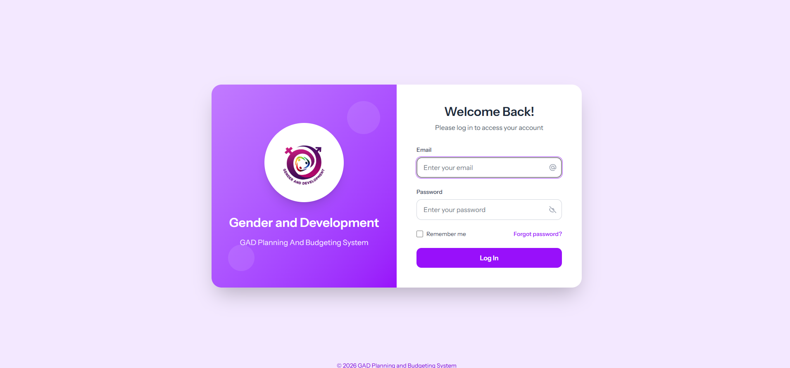

Hi, I'm Ervin Dave Jumamoy. I build responsive web applications, design digital art, and explore Internet of Things (IoT) systems.
Bridging Software & Physical Systems
I am an Information Technology student at Davao del Norte State College. My passion lies in creating responsive, clean interfaces and developing interactive solutions. I specialize in entry-level front-end development, digital design, and basic Internet of Things (IoT) projects.
I love using code to solve real-world problems—whether that's designing branding assets, structuring web layouts, or configuring microcontrollers to connect hardware to the web.
Core Competencies
Work Journey
On-the-Job Trainee – Provincial Information, Communication, and Technology Office (PICTO)
Gained practical experience in network infrastructure support, fiber optic cable deployment, computer troubleshooting, internet connectivity testing, and telecommunications installation. Assisted technical staff in maintaining ICT equipment and ensuring reliable network operations across government facilities.
Production Helper
Tibungco Superiorsnack Corporation. Enhanced operational efficiency, worked under strict schedules, and coordinated within large production teams.
Dishwasher
Aqua Glaive Purify Water. Maintained sanitation protocols, supported logistics and quality standards in a fast-paced environment.

Capstone Completion Certificate
Municipality of AsuncionValidates successful completion and presentation of the capstone project "Development of Geospatial and Clustering Analysis System for Optimized Planning and Budgeting in Gender Development".

Cisco Ethical Hacker
Cisco Networking AcademyAcknowledges completion of the Cisco Networking Academy course in Ethical Hacking, covering network mapping, vulnerability testing, and secure system design.

Capstone Exhibit Participation
DNSC Institute of ComputingAwarded for active participation and project presentation in the BSIT & BSIS Capstone Project Exhibit 2026 for the Gender Development system.

Advanced Seminar Series
DNSC Institute of ComputingAcknowledges completion of the 4th Year BSIT Advanced Seminar Series, "Journey from Science Practitioner to Information Technology Specialist," preparing students for the IT industry.

Certificate of Completion – On-the-Job Training (OJT)
DAVAO DE ORO - Provincial Information, Communication, and Technology Office (PICTO)Recognizes the successful completion of the On-the-Job Training program, providing hands-on experience in information and communications technology services, network support, technical troubleshooting, and ICT infrastructure operations within a professional workplace setting.

Development of Geospatial and Clustering Analysis System for Optimized Planning and Budgeting in Gender Development
A web-based Planning and Budgeting Management System that integrates geospatial mapping and K-Means clustering to support Gender and Development (GAD) planning, budget allocation, project monitoring, and data-driven decision-making for local government units.

ScanEase
A document scanning and management system designed to simplify file digitization, organization, and retrieval. The system provides an efficient way to manage scanned documents and improve accessibility of digital records.
Let's build something extraordinary
Whether you have an upcoming project, a complex bug to crack, or simply want to chat about futuristic design trends, I'm always open to connecting!
Purok 9 Mahayag, Bunawan, Davao city